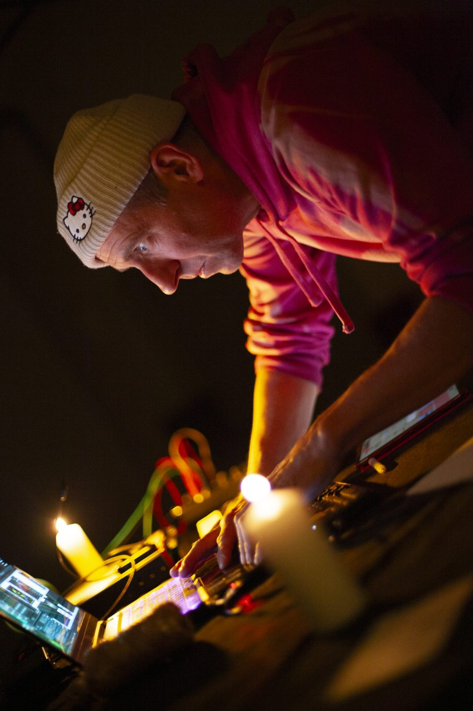
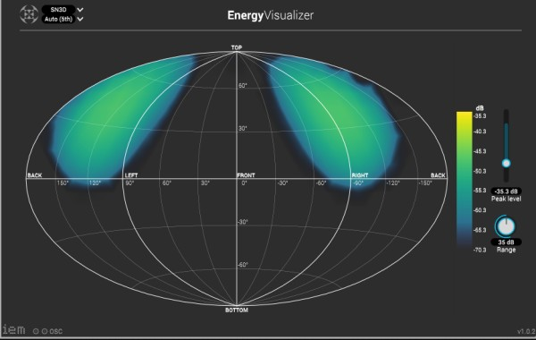
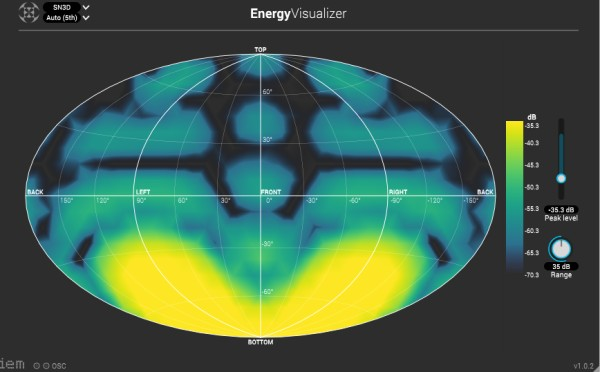

Vertical Movements
Mountains, hills, castles, lighthouses and skyscrapers: elevations, natural or man made, play an important role in human life. The ascent, climbing a mountain or taking a lift to the 40th floor, is carved into individual and collective memory. Vertical Movements is a piece about height and verticality, with vertigo as a sensorial state between anxiety and enlightenment.
Sounds are composed in space rather than in time, with simultaneous vertical realities colliding. Field recordings made on hills and heights, electronics and acoustic instruments are mixed in higher order ambisonics, so upper and lower movements are heard separately and the listener can focus on different regions. Psychoacoustics, like Blauert’s directional bands, are part of the score. The presentations are hybrids of sound installation, live multichannel performance and a vinyl release.
Research and residencies Musikfonds / Neustart Kultur (2021), Programa Cruce Madrid (2021, funded by VG Bild-Kunst), EMS Elektronmusikstudion Stockholm (2023). Thanks to Petra Goldman and Cultur im Corbusierhaus, and Bradley Schirmer.
- Richten 25, Berlin2026 · feedback and multichannel diffusion
- IN-SONORA, El Réplika Teatro, Madrid2026
- In-Sonora, Escucha 03, Sala Cruce, Madrid2025
- Concert, Uppsala2024
- Organ Sequences, Taborkirche, Berlin2024 · with Rieko Okuda and Romain Bertheau
- ROTA Festival, Blanca2024



